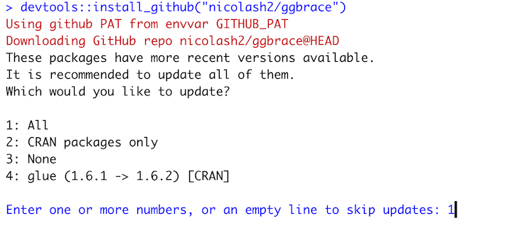
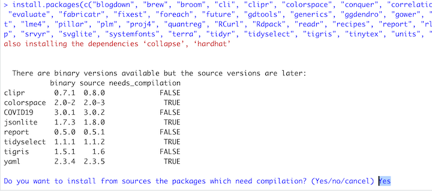
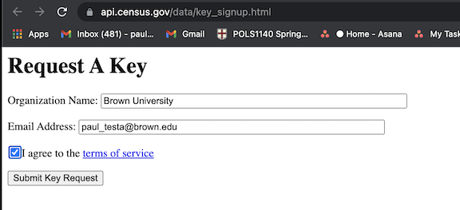

install.packages("dataverse")Installing the tidycensus, DeclareDesign, and dataverse packages
Overview
This document provides instructions for installing the following packages:
dataversea package to download and read files from dataverses like Harvard’s DataverseDeclareDesigna set of packages useful for describing the properities of experimetnal and observational designtidycensusset of functions of that allow us to download data from the US Census’ APIeasystatsa set of packages like thetidyversebut for statistics.
These are useful packages, but in the past, I’ve found they don’t play nicely with the simple the_packages ipak(the_packages) approach we take in class.
Additionally, for tidycensus, each of you will need to request an API key from the Census and install it locally to your computers.
1 Install the packages
In your console, please run each line of code separately
install.packages("tidycensus")install.packages("easystats", repos = "https://easystats.r-universe.dev")install.packages("DeclareDesign")Rwill typically install and or/update a package’s dependencies (other packages your package needs).
knitr::include_graphics("images/pack1.png")
- Sometimes R will ask you where and how you want to install/update these dependencies. Type the number 1 into your console and hit enter (this should try to install everything). If you get an error try again typing 2, then, 3, then 4.
knitr::include_graphics("images/pack_dep.png")
Rmay tell you need to restartRTry saying yes. If it doesn’t start downloading, say no, see what happens. After the downloads are complete you may need to restartR
knitr::include_graphics("images/pack2.png")
Rmay then ask if you want to compile some packages from source. TypeYinto your console. If this doesn’t work, try again, but this time typeNwhen asked
knitr::include_graphics("images/pack3.png")
Again, this is a pain and sort of cryptic, but you only have to do it once. Sometimes you’ll need to close and restart R for changes to take effect. Try working through these steps once or twice and if it still doesn’t work, shoot me an email.
2 Check your installation
If the installations went smoothly, you should see something like this when you run the following code:
require(dataverse)Loading required package: dataverserequire(tidycensus)Loading required package: tidycensusrequire(DeclareDesign)Loading required package: DeclareDesignLoading required package: randomizrLoading required package: fabricatrLoading required package: estimatr
Attaching package: 'DeclareDesign'The following object is masked from 'package:tidycensus':
get_estimatesrequire(easystats)Loading required package: easystats# Attaching packages: easystats 0.7.0 (red = needs update)
✔ bayestestR 0.13.2 ✔ correlation 0.8.4
✔ datawizard 0.9.1 ✔ effectsize 0.8.6
✔ insight 0.19.8 ✖ modelbased 0.8.6
✔ performance 0.10.8 ✔ parameters 0.21.5
✔ report 0.5.8 ✖ see 0.8.1
Restart the R-Session and update packages with `easystats::easystats_update()`.If not, don’t worry. These packages aren’t strictly necessary for Thursday; You should be able to follow along with the slides, but just won’t be able to download the data and run the code on your machine.
We’ll go over this in class on Thursday, and I can troubleshoot installation problems after class.
3 Install a Census API tidycensus package
To use the tidycensus package, you will need to do the following:
- Install the
tidycensuspackage - Load the installed package
- Request an API key from the Census
- Check your email
- Activate your key
- Install your API key in R
- Check that everything worked
Steps 1 and 2 should be done. So let’s walk through Steps 3-7:
3.1 Request an API key from the Census
Click on this link: https://api.census.gov/data/key_signup.html
And fill in the following information
- Organization: “Brown University”
- Email:
firstname_lastname@brown.edu - Agree to terms of service
- Submit request
knitr::include_graphics("images/census1.png")
3.2 Check Email
You should receive an email like this:

- Click on the link to activate your API key
3.3 Activate API key
- Clicking the link should take you to a page that looks like this

3.4 Save API key in R
Go back to the email from the census
- Copy the string of letters and digits from the email (blocked out in red in the image above)
- This is your unique census API key
- Paste that string in between the quotation marks below and run
census_api_key()
census_api_key("YOUR API KEY GOES HERE")3.5 Check that everything worked
census_api_key()should save your unique API to your .Renviron file whichtidycensuswill use whenever you make ask the Census to Download data.If everything worked as planned, running
Sys.getenv("CENSUS_API_KEY")should display your long API key
Sys.getenv("CENSUS_API_KEY")[1] "cad56d0c712406cfe825878e3bd0de256d19f2aa"And you should be able to use functions from tidycensus to download census data:
age10 <- tidycensus::get_decennial(geography = "state",
variables = "P013001",
year = 2010)Getting data from the 2010 decennial CensusUsing Census Summary File 1head(age10)# A tibble: 6 × 4
GEOID NAME variable value
<chr> <chr> <chr> <dbl>
1 01 Alabama P013001 37.9
2 02 Alaska P013001 33.8
3 04 Arizona P013001 35.9
4 05 Arkansas P013001 37.4
5 06 California P013001 35.2
6 22 Louisiana P013001 35.8You can read more about what tidycensus can do here